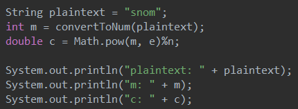

Cryptography
Cryptography Basics
Cryptography is the practice of using algorithms to alter data for the purpose of security. Cryptography is essential to maintaining confidentiality and privacy of data on the internet.
Basic cryptography terms
Plain Text
An unencrypted message, readable by everyone who has it.
Cipher Text
An encrypted message, unreadable by those without the means to decipher it back into plain text.
Encryption
The process of turning plain text to cipher text.
Decryption
The process of turning cipher text to plain text.
Key
An alphanumeric character, string of characters, or symbol used in an algorithm to encrypt and decrypt text.
Hash
A type of algorithm that converts a string of input to a fixed length output based on the data in the string. This string is the has value which is commonly used to make sure no changes to the data have been made in transfer as changes to the data will change the hash value.
Cipher
Any algorithm to encrypt or decrypt data via a defined procedure.
Symmetric Key Cryptography
Also known as Secret Key cryptography, symmetric key cryptography is an encryption in which the sender and receiver of a receiver share a common key; a "symmetric" key. As they tend to have a smaller key size, symmetric key algorithms require less space and have faster transmission. This means they are usually better for large amounts of information. However, they require all parties having access to the key. Some common symmetric encryption algorithms include AES, DES, RC4, and Blowfish.
The Data Encryption Standard uses a 56 bit key to map a 64 bit input block of plaintext to a 64 bit output block of ciphertext. As 56 bits is relatively small for modern computing power, the Triple DES is an alternative implementation of DES that uses a longer key length. Another very common algorithm is the Advanced Encryption Standard (the AES-256 is used by the U.S government). AES ciphers have a 128 bit block size. Different versions of AES use key sizes of 128, 192, or 256. The AES has now largely replaced the DES due to its far greater security.
While symmetric key algorithms are simple and fast, having to securely exchange the key to all parties can pose a challenge. If an unwelcome third party intercepted the key, all encrypted data would be compromised. This is where Asymmetric Key Cryptography comes in handy.
Asymmetric Key Cryptography
Also known as Public Key cryptography, asymmetric key cryptography makes use of both a public and a private key. The public key encrypts data while the private key decrypts data. Asymmetric Key Cryptography was invented by Whitfield Diffie and Martin Hellman in 1975. Named for its creators, the Diffie-Hellman algorithm is a key exchange protocl that allows parties to exchange a shared secret (key) without literally exchanging it over the internet.
RSA Algorithm
A common asymmetric algorithm is the RSA algorithm (named for its creators). RSA is used in e-commerce protocols. The RSA algorithm makes use of 4 steps.
1. Key generation
Two (large) prime numbers p and q are randomly chosen. These will be secret. The product of p and q, lets call it n, is used as the modulus of the public and private keys. The length of n in bits is the key length. The Carmichael's totient function λ(n), aka the least common multiple of (p-1) and (q-1) is found. Note that n is public, but the Carmichael's totient function λ(n) is private.
An integer e between 1 and λ(n) that is coprime to λ(n) is chosen. A commonly chosen value for e is 65 537. Let d be the modular multiplicative inverse of e (mod λ(n)); the product of d and e is congruent to 1 mod λ(n). d is the private key exponent. Once d has been computed, p, q, and λ(n) no longer have a use. n and e are used in the public key.
2. Key distribution
To let another party send an encrypted message to you, they must possess your public key (composed of m and e). This is key distribution.
3. Encryption
To send a message, turn the plaintext into an integer m such that m is between 0 (inclusive) and n (exclusive) using some mutually agreed protocol. The ciphertext can then be computed using your public key (e). This uses the formula:
c ≡ me (mod n)
The ciphertext is then sent to you to decrypt.
4. Decryption
You can use the private key exponent d to compute m using the formula:
cd ≡ (me)d (mod n)
By reversing the algorithm used to turn the plaintext into an integer, you can then use m to obtain the original text.
RSA encryption algorithm in Java
Key generation:

Note that in practice, setting p to 17, q to 31, and e to 3 is a horrible idea and they should be much larger. Their small size is for the purpose of being able to run the program. The methods used to find lcm (using gcd) and the modular multiplicative inverse are:

Encryption:
The method to convert the message into an integer value is fairly simple and not regular practice:

To decrypt the ciphertext, reverse the process that was used to encrypt it. Note that with large (safe) values of p, q, and e, this program will be unable to compute them.